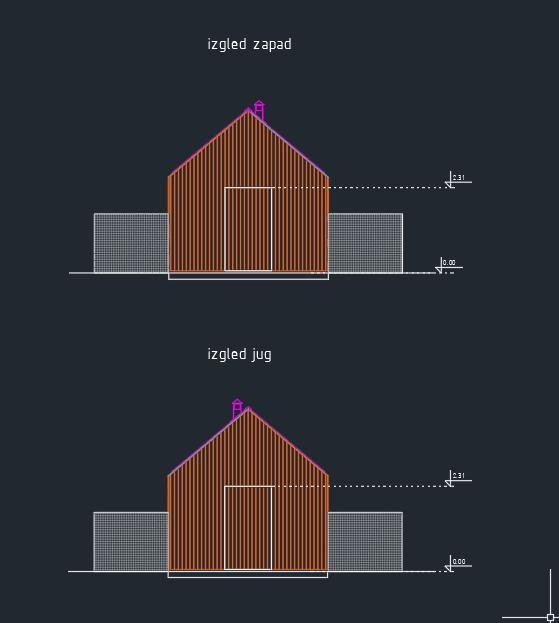
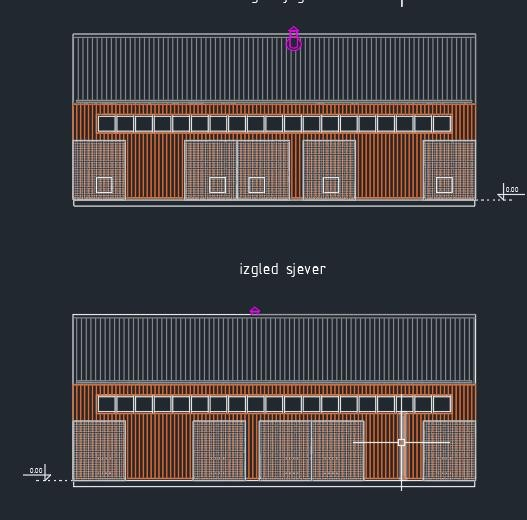
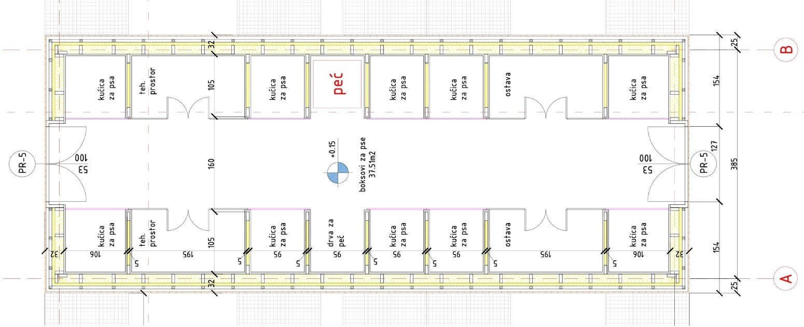
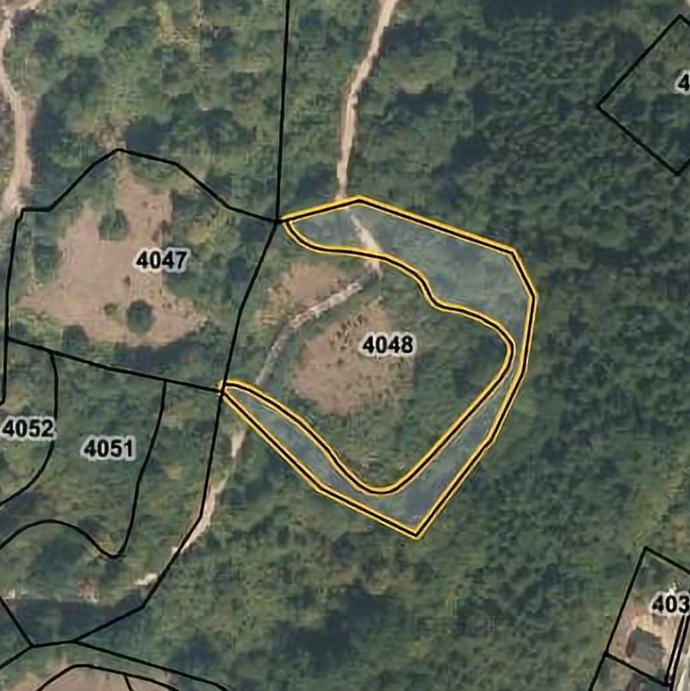
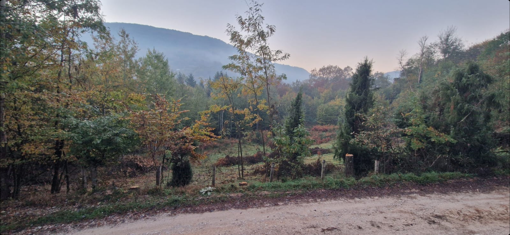

Aleks & Lima Lukić
Gründer von Sava ShelterMiloš & Ankica Lukić
Verwaltung & AdministrationRadomir & Dana Maksimović
Verwaltung & AdministrationBojan Lukić
IT und SupportSo fing alles an
Ich habe schon immer Tiere, aber vor allem Hunde geliebt. Anfang 2019 reiste ich durch Serbien und half einige
Tage im Hundeheim Vučjak Shelter aus, da ich es genieße, in Gesellschaft so vieler Hunde zu sein und ihnen etwas Gutes zu tun. Danach unterstütze ich das
Vučjak Shelter monatlich finanziell von Deutschland aus und lernte meine heutige Frau Lima kennen. Gemeinsam haben wir immer von einem Haus und Hund geträumt.
Für uns war dabei immer klar, dass es ein geretteter Hund sein sollte, da wir lieber einem Straßenhund (von denen es bereits so viele gibt!) ein
gutes Leben ermöglichen, als einen extra angezüchteten Rassehund zu kaufen. Lima fand Sava dann Ende 2020 auf dem Instagram-Profil von Vučjak Shelter und wusste sofort,
dass dies „unser Hund“ ist. Von nun an ging die Warterei los, da Corona einen Transport nach Deutschland sehr schwierig machte, und so sind wir im
April 2021 nach dem Umzug in unser Haus in Thüringen dann selbst nach Serbien gefahren, um Sava abzuholen.
Wir hatten mit Vučjak Shelter vereinbart, dass wir bei dieser Gelegenheit gleich noch weitere Adoptivhunde mitnehmen, und so waren wir auf dem Rückweg mit vier Hunden unterwegs.
Dabei verliebte sich die kleine Mila in unseren Sava und kuschelte sich ganz fest an ihn. Da sie nur eine temporäre Bleibe in Deutschland hatte,
nahmen wir sie spontan mit auf und könnten darüber rückblickend nicht glücklicher sein. Die beiden haben uns gezeigt, wie wunderbar es ist, diesen armen
Geschöpfen die Chance auf ein neues Leben in einer richtigen Familie zu schenken. Es ist so schön zu sehen, wie sie im Warmen auf Kuscheldecken schlafen
- ohne Hunger und Angst.
Wir würden am liebsten alle Hunde bei uns aufnehmen und fantasieren regelmäßig darüber, wie ein dritter und vierter sich wohl ins Rudel einfügen würden.
Da unsere Familien bei diesen Gedanken aber erschrocken die Hände über den Köpfen zusammenschlagen und uns monatliche Geldspenden allein aber auch nicht
zufriedenstellen, möchten wir einen Schritt weiter gehen. Wir wollen selbst proaktiv einen sicheren Ort für Hunde in Bosnien aufbauen und die ihr Dasein dort etwas erträglicher machen.
Projekt
Wo ich herkomme, sind die meisten Menschen arm und haben aufgrund eigener Sorgen nicht viel übrig für Tierwohl.
Hunde werden ihr Leben lang an kurzen Ketten gehalten oder in winzige Zwinger gesperrt, wo sie als „lebende Alarmanlage“ dienen. Diejenigen, die frei
herumlaufen, vermehren sich unkontrolliert, Welpen überleben selten ihre ersten Tage oder werden gar achtlos in Flüsse oder auf Mülldeponien geworfen.
Trotz Mangel an Empathie und finanzieller Ressourcen ist die lokale Regierung in Šekovići jedoch sehr interessiert an einer Zusammenarbeit mit einem
privaten Tierheim in der Region. Sie sind bereit uns mit nicht-monetären Gütern wie Baumaterialien, Brennholz, und Baumaschinen zu unterstützen.
Darüber hinaus benötigen wir jedoch weitere 9.000 € um mit dem Bau der Gebäude zu beginnen.
Dezember 2022
Der Architekt hat die ersten Skizzen für das Gebäude erstellt, in dem die Hunde unterkommen sollen!
Alle Voraussetzungen für einen Bauantrag sind erfüllt, die notwendigen Dokumente wurden vorbereitet. Nun warten wir auf die Fertigstellung der Baupläne,
um den Bauantrag einzureichen. Wir sind im ständigen Austausch mit der lokalen Regierung, welche uns Unterstützung in Form von Material und Baumaschinen
zugesichert hat. Wir planen, im Frühjahr 2023 mit den Bauarbeiten zu beginnen.



Oktober 2022
Wir haben ein großes Stück Land in der Nähe von Šekovići in Bosnien gekauft und planen nun die nächsten Schritte:
1. Aufbau eines Zaunes, um ein Gebiet von ca. 8.000 m² zu sichern
2. Erschließung des Areals mit Strom und Wasser
3. Errichtung eines beheizten Unterschlupfes aus Holz für mindestens 100 Hunde (bosnische Winter können bitterkalt werden!)
Das Land befindet sich hier: https://goo.gl/maps/uqZ5PsLTdmGmZFX88
Die Hauptstromleitung ist bereits in der Nähe vorhanden und muss nur einige hundert Meter weiter zum Areal geführt werden. Eine städtische
Wasserleitung läuft direkt neben dem Areal entlang, sodass lediglich eine Abzweigung errichtet werden muss. Wir sind bereits im Austausch mit den lokalen
Energie- und Wasserversorgern.

